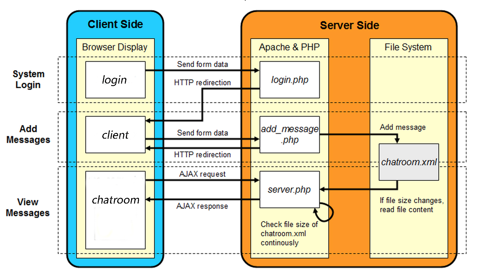
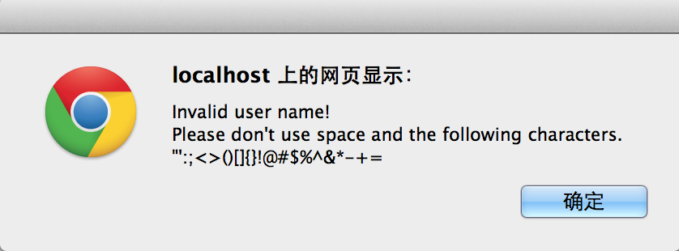

COMP4021 Lab 7
Chat System
Overview
- In the last lab, we have learned a chat system with a Flash front end and a PHP back end. Flash is just one way of doing things (i.e., using flash to display text messages). It used to be very important. Although its importance is diminishing, still there is a lot of websites using flash. It is still useful to learn something about flash, e.g., people still need to maintain old websites that use flash. However, we can use JQuery to display, which will make homework muck easier. In this lab, we will learn a chat system without using flash. The architecture of this program is similar to what we have learnt in the last lab with slight difference.
- Implementation of the server side
- Implementation of the client side
- The starting code, CHATROOM.zip, is given to you.
Apache Server Setup
- Using Computers in Lab 4210
- Due to installation restrictions in the teaching lab, you have to use Virtual PC to install and run your Apache server
- To work with the pre-installed Virtual PC for the lab:
- Copy D:\image\comp4021.vmc and D:\image\comp4021.vhd to D:\temp
- Double-click on comp4021.vmc in D:\temp to start the Virtual PC
- Wait for the Virtual PC to boot up,We will work inside the Virtual PC after it has booted up
- Download the right WAMP server for php through here. Install it on your virtual machine.
- After installation, start the Wamp server.
- Notice that, if you are running Skype, the wamp server cannot work correctly. So please stop Skype, or any applications that might be occupying port 80. A post discussing this issue is here.
- Using your own computer
- Windows system
- Download the right WAMP server for php through here. Install it on your virtual machine.
- After installation, start the Wamp server.
- Notice that, if you are running Skype, the wamp server cannot work correctly. So please stop Skype, or any applications that might be occupying port 80. A post discussing this issue is here.
-
Mac OS X
- Using command line to enable the bulit-in Apache Web Server
- Or, you can download and install XAMPP server for mac
- In the teaching lab, the computer's system is Windows. So we only talk about how to use WAMP server
- After booting up the wamp server, copy the file helloworld.php here to www directory under where you install your Wamp server to check wether the server works
- Make your browser point to this location, http://localhost/helloworld.php
- You should see a message 'Hello World' in your browser
- For this lab you can use the chatroom starting files by extracting the files and putting them into the www directory
Information Flow
- Here is an illustration of the flow of information for the system

- The basic flow of the whole operation is:
- Step 1 - Load the main page, chatroom.html
- Step 2 - After entering the username, the name is sent to login.php
- Step 3 - The user enters a message, the message is sent to add_message.php for processing in the server
1. Implementation of the Server Side
- There are three files mainly responsible for handling the operations in the server side
- These files are login.php, add_message.php and server.php
- Because they are designed to be used for server side operations only, the output from these files are not for displaying in the client side, i.e. these files are invisible from the user's point of view
- Note that we could have combined both the server operations and client display together in one file
- However, in this lab, we choose to use separate files for server-side operations and client-side display, so that you can understand the system easily
1.1. login.php - Handling user login
1.2. add_message.php - Adding a message to the chat room
$info = fgets($f);
If the file is empty, write the first message array into the xml file.
if ($info == "") {
$data = array(
// one chat log, records the user name, message content and time stamp
0 => array(
"username" => $name,
"message" => $message,
"time" => time(),
)
);
file_put_contents("chatroom.xml", json_encode($data));
If not empty, fetch the existed log in xml file, add the new message and then write back to the file.
$d = json_decode($info, true);
array_push($d, $data);
file_put_contents("chatroom.xml", json_encode($d));
Remember to close it:
fclose($f);
After updating the chatroom.xml, the page is waiting for the next message input
1.3. server.php - Handling requests from the client side
- This file is used as the server connection. The main purpose of this file is to output the chatroom messages from chatroom.xml to client side
- When this file is requested by the client, the output is sent to the client. The Javascript code in client.js finds the new messages in the XML output and then displays the messages in the chatting area
- You need to add the code here, which is similiar to code in addmessage.php
// open the chatroom.xml
$f = fopen("chatroom.xml", "r"):
// read content of the file
$info = fgets($f);
// output to the polling request
echo $info;
//close the file
fclose($f);
2. Implementation of the Client Side
- In the client side, the user can see the output of these two files:
- They are mainly responsible for accepting the user input and displaying the chatroom messages
- After the user has entered data in a form, the data will be sent to one of the php scripts located in the server
2.1. chatroom.html
- This is a very simple file which plots the login and the chat log.

2.2. client.js
2.2.1. Handling user login
- User login is handled. The input user name can only contain letters or digits.
- Using AJAX send request to login.php, write the user name into the cookie
- You need to add the code for check whether the user name contains illegal charaters in this lab. The user name can only contain letters and digits
- if user name contains illegal characters, the window will pop out

2.2.2. Sending a message to the server
- This is the main user input of the chat room
- The input from this form is sent to add_message.php so that the content of chatroom.xml can be updated
2.2.3. Getting messages from the server
2.2.3.1. Polling
- Keep executing function updateMsg(), constantly check whether the content in server.php changed
- UpdateMsg():update the chatting area. Request the server.php to fetch the chat log, then add to the chatting area
2.2.3.2.Passing information to chat area for displaying
- addMessages(xml):passing information to chatting area for displaying.
- appendLog(msg):translate text of each log to html element in the chatting area. Display the text of message in the chatting area. The following is the ActionScript code of appendLog(msg):
function appendLog(msg) {
var d = log[0]
var doScroll = d.scrollTop == d.scrollHeight - d.clientHeight;
msg.appendTo(log)
if (doScroll) {
d.scrollTop = d.scrollHeight - d.clientHeight;
}
}
Submission
This work is the start of your PHP Forum assignment
It is essential that you complete it, and keep a copy of it for further development